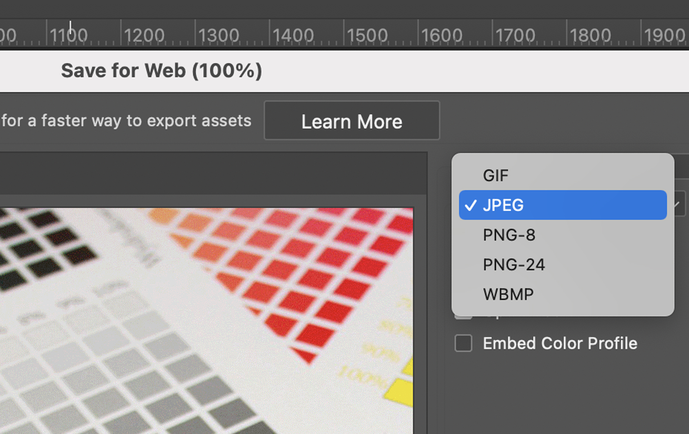

ตามที่เคยอธิบายไฟล์ jpg และ pdf ไว้ใน
วันนี้จะมาอธิบายรายละเอียดของ นามสกุลไฟล์แต่ละชนิด เพิ่มเติม
โดยจะแยกเป็น 2 ประเภท คือ แบบที่แก้ไขไม่ได้ และแบบที่แก้ไขได้
1.แบบที่แก้ไขไม่ได้ คือ
ไฟล์ที่จะดู อัปโหลด แชร์ อย่างเดียว ไม่สามารถเข้าไปแก้ไขข้อมูลด้านในได้
ได้แก่ .JPG .PNG .GIF .RAW
นามสกุล .JPG (ย่อมาจาก Joing Photographic Experts Group)
เป็นรูปแบบของไฟล์รูปภาพยอดนิยม ซึ่งส่วนใหญ่จะเหมาะสำหรับ ดู ตรวจสอบ อัปโหลดและ แชร์รูปภาพ
ข้อดีคือ สามารถเข้ากันได้กับหน่วยประมวลผลภาพและเบราว์เซอร์ ได้แทบทุกประเภท
ข้อเสียคือ เป็นรูปแบบของไฟล์ราสเตอร์ ที่สร้างขึ้นจากพิกเซล ไฟล์จะสูญเสียข้อมูล ที่ทำให้คุณภาพของรูปภาพต้นฉบับลดลงไปบ้าง และไม่สามารถแก้ไขข้อมูลหรือปรับขนาดอะไรได้
นามสกุล .PNG (ย่อมาจาก Portable Network Graphics)
เป็นรูปแบบของไฟล์รูปภาพลักษณะจะคล้ายๆกับไฟล์ .JPG แต่ไฟล์ .PNG จะมีการบีบอัดแบบไม่สูญเสียข้อมูล
ข้อดีคือ รูปภาพจะมีคุณภาพจะดีกว่า .JPG เมื่อบีบอัดรูปภาพ คุณภาพจะยังคงเหมือนเดิมไม่ว่าจะแก้ไขและบันทึกไฟล์กี่ครั้งก็ตาม และจะมีความสามารถในการรองรับกราฟิกที่มีพื้นหลังโปร่งใสด้วย
ข้อเสียคือ ด้วยคุณภาพที่ดีกว่า ซึ่งจะทำให้ไฟล์ .PNG มีขนาดใหญ่กว่า.JPG ด้วย
นามสกุล .GIF (ย่อมาจาก Graphics Interchange Format)
เป็นรูปแบบของไฟล์รูปภาพลักษณะจะคล้ายๆกับไฟล์ .JPG ซึ่งไฟล์ .GIF จะสามารถผสานรวมรูปภาพหรือเฟรมเข้าด้วยกันเพื่อสร้างภาพเคลื่อนไหวแบบพื้นฐานได้ด้วย
ข้อดีคือ สามารถทำเป็นภาพเคลื่อนไหวได้ ด้วยขีดจำกัดสีในไฟล์ .GIF และมีการบีบอัดแบบไม่สูญเสียข้อมูล ทำให้ไฟล์มีขนาดค่อนข้างเล็ก
ข้อเสียคือ ด้วยรูปแบบไฟล์ .GIF รองรับเฉพาะจานสี 256 สีเท่านั้น ซึ่งหมายความว่ารูปภาพอาจมีความละเอียดต่ำหรืออาจเบลอเล็กน้อย
นามสกุล .RAW (ย่อมาจาก Tag Image File Format)
เป็นรูปแบบของไฟล์รูปภาพที่ได้จากเซ็นเซอร์ของกล้องดิจิทัลหรือเครื่องสแกนโดยตรงทั้งหมด
โดยไม่มีการบีบอัดหรือการปรับแต่งใดๆ
ข้อดีคือ รูปภาพจะมีคุณภาพที่ดีที่สุด เนื่องจากมีการตรวจจับและจัดเก็บรายละเอียดทั้งหมด ที่ผ่านเข้ามายังเซ็นเซอร์ของกล้อง
ข้อเสียคือ การแชร์ไฟล์ RAW อาจเป็นเรื่องที่ยุ่งยากมาก เนื่องจากไฟล์มีขนาดใหญ่มาก และต้องใช้โปรแกรม Adobe Photoshop Lightroom ในการเปิดดูและแก้ไขเท่านั้น
2.แบบที่แก้ไขได้ คือ
ไฟล์ที่สามารถเข้าไปแก้ไขข้อมูลด้านในได้
ได้แก่ .AI .PSD .ING .PDF
นามสกุล .AI (ย่อมาจาก Adobe Illustrator)
เป็นรูปแบบของไฟล์รูปภาพเวกเตอร์ ซึ่งจะต่างจากไฟล์ราสเตอร์ (JPG PNG GIF) ที่สร้างขึ้นจากพิกเซล
ตรงที่ไฟล์เวกเตอร์จะไม่สูญเสียความละเอียดเมื่อปรับขนาด เพราะไฟล์เวกเตอร์สร้างขึ้นจากสูตรที่ซับซ้อนที่คล้ายกราฟซึ่งสามารถขยายออกไปได้อย่างไม่มีที่สิ้นสุด
โดยส่วนใหญ่ไฟล์ .AI จะเหมาะสำหรับ งานภาพวาด โลโก้ ภาพประกอบ Artwork นามบัตร โบว์ชัวร์ ใบปลิว หนังสือ ถุง กล่อง และงานเอกสาร ที่เกี่ยวกับงานพิมพ์ต่างๆ ซึ่งไฟล์ประเภทนี้จะได้รับความนิยมในหมู่นักออกแบบและนักวาดภาพอย่างมาก
ข้อดีคือ ไฟล์ .AI มาพร้อมความสามารถในการปรับขนาดได้โดยไม่มีขีดจำกัด มีคุณภาพที่สูงและ มักมีขนาดเล็ก สามารถส่งต่อ อัปโหลด และจัดเก็บไฟล์ได้ง่าย
ข้อเสียคือ เหมาะสำหรับเปิดดูและแก้ไขไฟล์ด้วยโปรแกรม Adobe Illustrator เท่านั้น
นามสกุล .PSD (ย่อมาจาก Adobe Photoshop)
เป็นรูปแบบไฟล์ที่นักออกแบบและศิลปินใช้กันบ่อยที่สุด โดยเป็นเครื่องมือที่มีประสิทธิภาพสำหรับการเก็บข้อมูลรูปภาพและชิ้นงาน ซึ่งสามารถจัดเก็บเลเยอร์จำนวนมาก ทั้งรูปภาพ และวัตถุที่มีความละเอียดสูง
โดยส่วนใหญ่ไฟล์ .PSD จะเหมาะสำหรับ งานออกแบบ งานภาพวาด ภาพประกอบ ตกแต่งภาพ อื่นๆ
ข้อดีคือ ไฟล์ .PSD สามารถเก็บข้อมูลสี คุณภาพของรูปภาพไว้ได้ในปริมาณมาก และสามารถแก้ไขระหว่างเลเยอร์ได้ โดยสามารถนำรูปภาพมาซ้อนทับกันและปรับแต่งรูปภาพทีละรูปได้
ข้อเสียคือ เหมาะสำหรับเปิดดูและแก้ไขไฟล์ด้วยโปรแกรม Adobe Photoshop เท่านั้น และบางไฟล์อาจจะมีขนาดใหญ่ ทำให้อาจมีปัญหาเวลา เก็บ ส่ง อัปโหลดได้
นามสกุล .INDD (ย่อมาจาก InDesign Document)
เป็นรูปแบบไฟล์ที่นักออกแบบกราฟิก ใช้สำหรับการออกแบบเค้าโครงหน้า ตั้งแต่แบบอักษร ข้อมูลการจัดรูปแบบ ไปจนถึงเนื้อหาบนหน้า แถบสี และสไตล์
โดยส่วนใหญ่ไฟล์ .INDD จะเหมาะสำหรับงานที่มีหลายหน้าเช่น งานหนังสือ นิตยสาร โบรชัวร์ ใบปลิว และสิ่งพิมพ์ อื่นๆ
ข้อดีคือ ไฟล์ .INDD จะสามารถสร้างเทมเพลตเพื่อให้หน้า บท และสิ่งพิมพ์ต่างๆ ที่มีจำนวนหน้ามากๆ ให้มีความสอดคล้องกันได้
ข้อเสียคือ เหมาะสำหรับเปิดดูและแก้ไขไฟล์ด้วยโปรแกรม Adobe Indesign เท่านั้น และบางไฟล์อาจจะมีขนาดใหญ่ ทำให้อาจมีปัญหาเวลา เก็บ ส่ง อัปโหลดได้
นามสกุล .PDF (ย่อมาจาก Portable Document Format)
เป็นรูปแบบของไฟล์ .PDF สามารถใช้ในการจัดเก็บ และแชร์ข้อมูล รูปภาพกับข้อความได้
ซึ่งส่วนใหญ่จะเหมาะสำหรับ ดู ตรวจสอบ แก้ไข อัปโหลด แชร์ สั่งพิมพ์ งาน รูปภาพ Artwork เอกสารต่างๆ
จุดเด่นหลัก PDF คือการเป็นไฟล์รูปแบบสากล ซึ่งหมายความว่าเนื้อหาใน PDF จะแสดงผลในลักษณะเดียวกันในทุกอุปกรณ์ ทำให้โรงพิมพ์จึงนิยมใช้ไฟล์ PDF ในการตรวจสอบหรือพิมพ์งาน เนื่องจากไฟล์ประเภทนี้จะรักษาองค์ประกอบทั้งหมดของหน้าไว้ดังเดิมและจะคงคุณภาพของรูปภาพเอาไว้เมื่อทำการขยายภาพ
ข้อดีคือ ไฟล์ .PDF มักจะมีคุณภาพสูงกว่า .JPG และสามารถปรับแต่งได้ PDF (ถ้ามี Fonts จะสามารถแก้ไขตัวอักษรได้)
ข้อเสียคือ ด้วยคุณภาพที่สูงกกว่าและสามารถขยายภาพ โดยที่คงคุณภาพไว้ได้ด้วย
ก็ส่งผลให้ไฟล์มีขนาดที่ใหญ่ขึ้นตาม
*** ปัญหาส่วนใหญ่ที่พบจากประสบการณ์ส่วนตัวของผู้เขียน
คือ เมื่อลูกค้าส่งไฟล์มาโรงพิมพ์ เป็น jpg แล้วมีปัญหา ภาพเล็กไป ภาพแตก ผิดขนาด แก้ไข เผื่อตัดตก ไม่ได้ ต้องใช้ไฟล์ที่สามารถแก้ไขรายละเอียดของ Artwork ได้ เลยขอเป็นไฟล์นามสกุล ai psd ind doc ที่สามารถแก้ไขข้อมูลได้
แต่ด้วยความไม่เข้าใจ ลูกค้าจึงนำไฟล์ jpg ไปโยนลง โปรแกรม Photoshop หรือ illustrator แล้ว save มาเป็นไฟล์นามสกุล ai หรือ psd ซึ่งด้านในมันก็เป็นแค่รูป jpg เหมือนเดิม ทำให้ไม่สามารถแก้ไขข้อมูลได้อยู่ดี
ซึ่งวิธีแก้ปัญหา ถ้าไม่มีไฟล์ ai psd ind จริงๆ
ก็อาจจะต้องไปจ้าง Graphic Design ที่สามารถทำ Artwork ให้ได้ครับ
บทความเกี่ยวกับสิ่งพิมพ์อื่นๆ
- ขนาดของกระดาษตามระบบ ISO
- ความแตกต่างระหว่างโรงพิมพ์ OFFSET และ โรงพิมพ์ DIGITAL
- ระบบสี CMYK กับ RGB ต่างกันอย่างไร
- ส่ง FILES ARTWORK ให้โรงพิมพ์อย่างไร ให้ไม่มีปัญหา
- ชนิดของกระดาษ ที่ใช้ในงานพิมพ์
- ใช้โปรแกรมไหน ทำ Artwork ส่งโรงพิมพ์ดี
- การเคลือบสิ่งพิมพ์ (Coating Method) แต่ละชนิดมีอะไรบ้าง
- กระดาษที่นิยมนำมาทำถุงมีกี่ชนิด
- กระดาษที่นิยมนำมาผลิตกล่องมีกี่ชนิด
- สื่อสิ่งพิมพ์โฆษณากระดาษ โบร์ชัวร์ ใบปลิว มีกี่ชนิด อะไรบ้าง
- การเข้าเล่มหนังสือมีทั้งหมดกี่ชนิด
- เทคนิคการทำไฟล์ Artwork ส่งโรงพิมพ์ Offset ให้ราคาถูกลง
- ท่ามกลางเทรนด์ของสื่อดิจิตอล ทำไมสื่อสิ่งพิมพ์ถึงยังมีความจำเป็นอยู่
- วิธีการออกแบบสื่อสิ่งพิมพ์ให้มีประสิทธิภาพ
- วิธีการสร้างแบรนด์ให้แข็งแกร่งโดยใช้สื่อสิ่งพิมพ์
- ปัญหาที่พบบ่อยในงานสิ่งพิมพ์
- ขนาดอัตราส่วนของกระดาษ A B C ANSI
- ขั้นตอนหลักๆ ในการทำสิ่งพิมพ์ประเภทต่างๆ
- เทคนิคการพิมพ์แบบพิเศษ
- ความรู้เกี่ยวกับทฤษฎีการผสมสี CMYK
- ชนิดของกระดาษใช้ทําบิลมีอะไรบ้าง
- สาเหตุของปัญหา รอยขีดข่วน บนงานพิมพ์เกิดจากอะไร
- คำแนะนำในการออกแบบ ฟอนต์ สี และการจัดรูปแบบของสื่อสิ่งพิมพ์
- การพิมพ์ออฟเซ็ท (Offset Printing) คืออะไร?
- การพิมพ์ดิจิทัล (Digital Printing) คืออะไร?
- นวัตกรรมใหม่ของธุรกิจสิ่งพิมพ์
- การพิมพ์ที่ยั่งยืน (Sustainable Printing) คืออะไร
- การใช้ AR ในอุตสาหกรรมการพิมพ์
- พลังของบรรจุภัณฑ์ทางการตลาด
- เทคนิคการตัดไดคัทและปั๊มนูน
- อนาคตของการเทคโนโลยีสิ่งพิมพ์
- การพิมพ์เพื่อความปลอดภัย (Security Printing) คืออะไร
- การใช้สื่อสิ่งพิมพ์เพื่อสร้างเอกลักษณ์ของแบรนด์
- การใช้เทคโนโลยี AR และ Interactive ในสื่อสิ่งพิมพ์
- การใช้ AI ในอุตสาหกรรมการพิมพ์
- มุมมองทางประวัติศาสตร์ในอุตสาหกรรมการพิมพ์
- วิธีแก้ปัญหาสระเด้ง/ลอย ให้ถูกต้อง
- ประโยชน์และวิธีการใช้ Pantone ที่ถูกต้อง
- ทำไมราคาหนังสือแพงขึ้น?
- แนวโน้มการออกแบบสิ่งพิมพ์ในปี 2025
- การใช้ AI มาช่วยจัด Layout Artwork ของงานสิ่งพิมพ์
- ตัวอย่างและรายละเอียดปฎิทินแขวน
- วิธีเตรียมไฟล์งานพิมพ์ให้สมบูรณ์แบบ
- แจกฟรี! 🎁 ไอเดีย Packaging น่ารัก ที่ทำให้ลูกค้ารักแบรนด์คุณ
- วิธีเลือกกระดาษให้เหมาะกับงานพิมพ์ของคุณ
- Cost 101: ทำไมพิมพ์เยอะยิ่งคุ้ม (เศรษฐศาสตร์งานพิมพ์)
- ในยุคที่ Online ครองเมือง ทำไม โบรชัวร์ & แคตตาล็อก ถึงยังเป็นอาวุธลับปิดการขายที่ได้?
- แนวโน้มการออกแบบสิ่งพิมพ์ในปี 2026